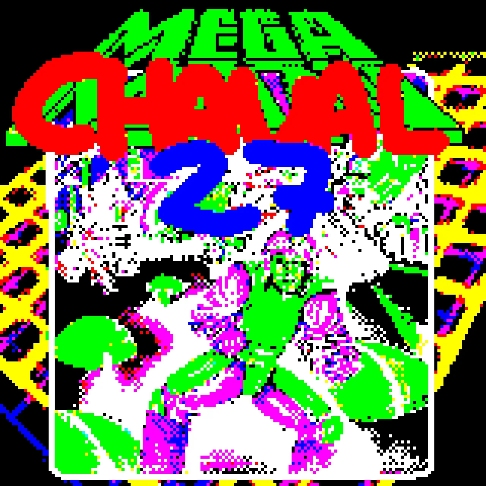
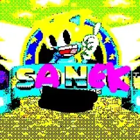

GLASS GIRL BLOG
GLASS GIRL BLOG Este es el sitio web de grassgirlLTL
Holaaaa <3 <3 mi nombre es grassgirl!! aunque quizas ya lo vieron por el nombre :p, este es mi primer blog/sitio web lol, y la verdad me gustaria que dure algunos años en linea, espero no lo tumbe el gobierno o algo xD, antes de introducirme le agradezco a mi profesora de computacion por enseñarme a crear webs!
Aqui una foto de ella:

Bueno aqui mi introduccion
- Nombre real: Es un secreto T-T
- Edad: 15 años
- Gustos: Juegos y dibujos y musiquita
- Poderes: Todos y genkidama
- Estilo: Mitico

En esta web hablare de muchas cosas como...


JUEGOS!!! QUE SERÍA MI VIDA SIN LOS JUEGOS :3
Aquí un top de mis juegos favoritos xD, algunos son algo viejos es que yo soy algo retro :D

MEGA CHAVAL 27
"El ventigecimo séptimo juego de la saga lanzado en el año 1919 cuenta la historia de Pop donde tiene que salvar el mundo del doctor cruz verde, pronto habrá un video de curiosidades sobre este juego en mi canal :3."

Sanek: El Conejo de la Suerte
"Lanzado en el año 1800 este juego es bastante divertido, jugamos como un conejo que tiene que recolectar los diamantes del control, tiene uno de los mejores soundtrack de la historia de los videojuegos :3 me encantan los diseños de personajes de esta franquicia!!! Lo notarán por mi estilo de dibujo :D, soy gran fan desde niña."

Free fire
"Este juego salió en el año 2007, este es un juego por equipos donde el mas sigiloso ganará !!!! 0.0, la verdad soy bastante buena en este juego, es un juego muy famoso y ha hecho muchas colaboraciónes durante estos 40 años de historia de la saga."

2 DIAS
"2 DIAS."

Karma-Chan Love Love Deluxe
"Está es una visual novel donde viajan al mundo del invierno!!! Este tienes que hacerte amigo de todo el mundo!!! Hay traición, aventura y enemigos invencibles!!! Fue mi primera visual novel y ame el personaje de Onil!! :D"


En este lugar contamos -historias - cuentos - anecdotas- para todos :3
Puedes leer mis historias aun si eres persona, hombre, mujer o gato!!!
Denle click AQUI para empezar a ver mis blogs >:3


Juanita Princesa Guerrera

"Este es un de mis ocs!! en su mundo ella es una de las princesas guerreras, posee una espada de 10000000 de poder, tira rayos y tira perros xD."
OTROS OCSSS !! :33

"Estos estan basados de la serie Joaquin Motel, el primero es un demonio alto llamado Kevin y su amigo de color negro Jonaiker."
Fanart de Sanek

"Aqui mi hermana como personaje de Sanek el conejo de la suerte :P usualmente no le gusta que la dibuje pero andaba aburrida ese dia."
Fanart de MegaChaval 27

"Fan art de mi Juego favorito Mega Chaval 27 :DD pronto habra un video de este videojuego en mi canal de Zvideos dwb."
Fanart de Colun

"El protagonista de BallSerpiente X. Como pueden ver es de tez mas oscura, esto es un head canon mio!!!
TwT SE QUE GRAN PARTE DE LA COMUNIDAD LO ODIA PEROOOOO... que mas da!!"

"
"